Principe et définitions
À partir d’une fonction de service, les fonctions techniques sont situées par rapport à leurs voisines en réponse à trois questions :
- Pourquoi, dans quel but doit-on assurer cette fonction ?
- Comment doit-on assurer cette fonction ?
- Quand cette fonction doit-elle être assurée ?
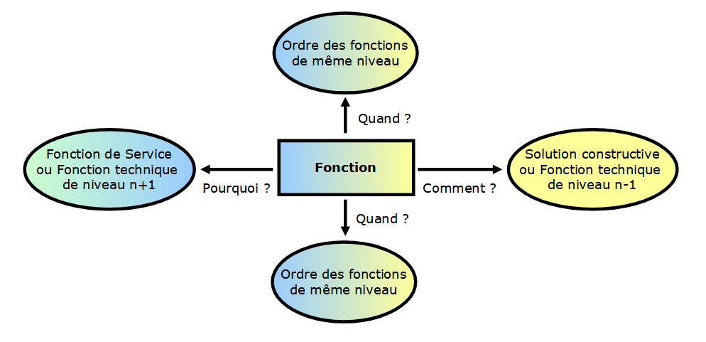
Pourquoi
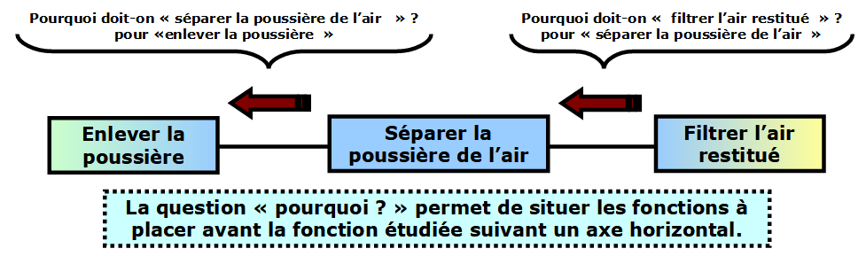
Comment
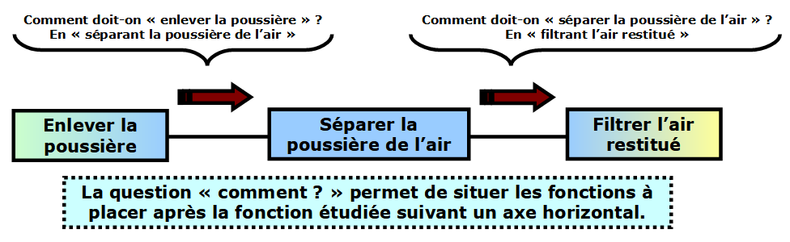
Quand
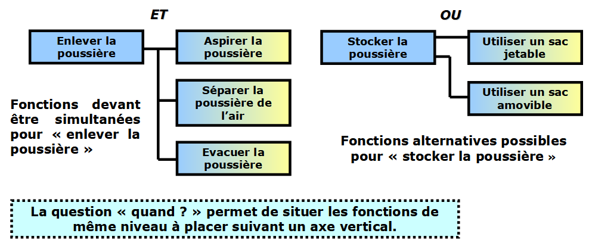
Exemple de structure
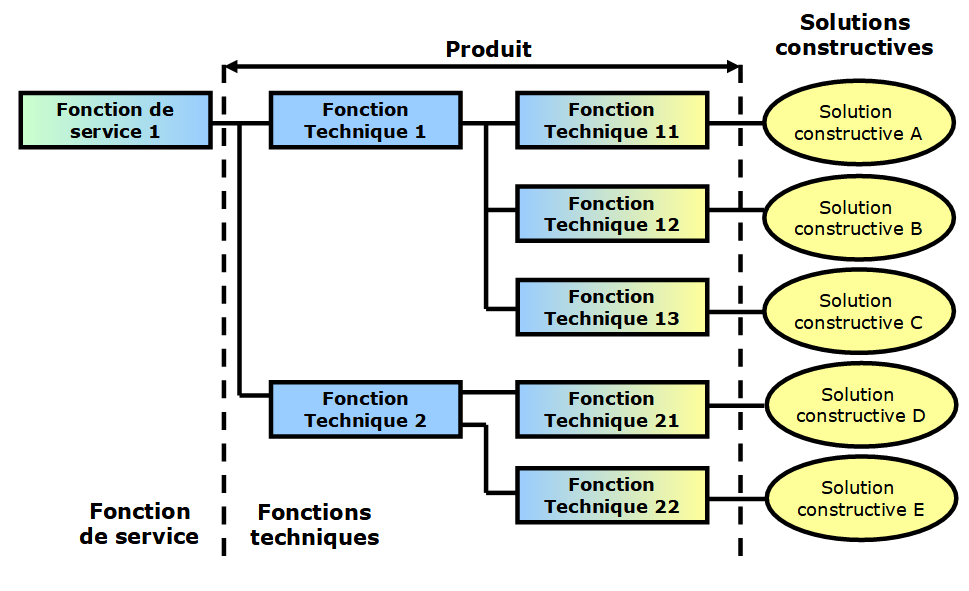
Exemple du Scooter
2
Cliquer sur les zones actives ou sur les icônes d'image.
{"typeGame":"Mapa","instructions":"","showMinimize":false,"showActiveAreas":false,"author":"","url":"resources/fast_scooter.jpg","authorImage":"","altImage":"","itinerary":{"showClue":false,"clueGame":"","percentageClue":40,"showCodeAccess":false,"codeAccess":"","messageCodeAccess":""},"points":[{"id":"p379176059404","title":"FP1","type":0,"url":"resources/fast_scooterp1.jpg","video":"","x":0.08625,"y":0.0766233964399858,"x1":0,"y1":0,"footer":"","author":"","alt":"","iVideo":0,"fVideo":0,"eText":"","iconType":0,"question":"","question_audio":"","toolTip":"","link":"","map":{"id":"a379176059404","pts":[{"id":"p1275740070869","title":"","type":0,"url":"","video":"","x":0,"y":0,"x1":0,"y1":0,"footer":"","author":"","alt":"","iVideo":0,"fVideo":0,"eText":"","iconType":0,"question":"","question_audio":"","toolTip":"","link":"","map":{"id":"a1275740070869","url":"","alt":"","author":"","pts":[]},"slides":[{"id":"s1275740070869","title":"","url":"","author":"","alt":"","footer":""}],"activeSlide":0}],"url":"","alt":"","author":"","active":0},"slides":[{"id":"s379176059404","title":"","url":"","author":"","alt":"","footer":""}],"activeSlide":0,"audio":""},{"id":"p140237179332","title":"FC1","type":0,"url":"resources/fast_scooterc1.jpg","video":"","x":-0.00125,"y":0.2887445342489135,"x1":0,"y1":0,"footer":"","author":"","alt":"","iVideo":0,"fVideo":0,"eText":"","iconType":0,"question":"","question_audio":"","toolTip":"","link":"","map":{"id":"a140237179332","pts":[{"id":"p3293929394","title":"","type":0,"url":"","video":"","x":0,"y":0,"x1":0,"y1":0,"footer":"","author":"","alt":"","iVideo":0,"fVideo":0,"eText":"","iconType":0,"question":"","question_audio":"","toolTip":"","link":"","map":{"id":"a3293929394","url":"","alt":"","author":"","pts":[]},"slides":[{"id":"s3293929394","title":"","url":"","author":"","alt":"","footer":""}],"activeSlide":0}],"url":"","alt":"","author":"","active":0},"slides":[{"id":"s140237179332","title":"","url":"","author":"","alt":"","footer":""}],"activeSlide":0,"audio":""},{"id":"p820628267962","title":"FC2","type":0,"url":"resources/fast_scooterc2.jpg","video":"","x":0.02875,"y":0.5268397723441516,"x1":0,"y1":0,"footer":"","author":"","alt":"","iVideo":0,"fVideo":0,"eText":"","iconType":0,"question":"","question_audio":"","toolTip":"","link":"","map":{"id":"a820628267962","pts":[{"id":"p32223346736","title":"","type":0,"url":"","video":"","x":0,"y":0,"x1":0,"y1":0,"footer":"","author":"","alt":"","iVideo":0,"fVideo":0,"eText":"","iconType":0,"question":"","question_audio":"","toolTip":"","link":"","map":{"id":"a32223346736","url":"","alt":"","author":"","pts":[]},"slides":[{"id":"s32223346736","title":"","url":"","author":"","alt":"","footer":""}],"activeSlide":0}],"url":"","alt":"","author":"","active":0},"slides":[{"id":"s820628267962","title":"","url":"","author":"","alt":"","footer":""}],"activeSlide":0,"audio":""},{"id":"p28252264667","title":"FC3","type":0,"url":"resources/fast_scooterc3.jpg","video":"","x":0.0575,"y":0.7606060061103854,"x1":0,"y1":0,"footer":"","author":"","alt":"","iVideo":0,"fVideo":0,"eText":"","iconType":0,"question":"","question_audio":"","toolTip":"","link":"","map":{"id":"a28252264667","pts":[{"id":"p531973268703","title":"","type":0,"url":"","video":"","x":0,"y":0,"x1":0,"y1":0,"footer":"","author":"","alt":"","iVideo":0,"fVideo":0,"eText":"","iconType":0,"question":"","question_audio":"","toolTip":"","link":"","map":{"id":"a531973268703","url":"","alt":"","author":"","pts":[]},"slides":[{"id":"s531973268703","title":"","url":"","author":"","alt":"","footer":""}],"activeSlide":0}],"url":"","alt":"","author":"","active":0},"slides":[{"id":"s28252264667","title":"","url":"","author":"","alt":"","footer":""}],"activeSlide":0,"audio":""},{"id":"p1632595781478","title":"FC4","type":0,"url":"resources/fast_scooterc4.jpg","video":"","x":0.43125,"y":0.9012986468030261,"x1":0,"y1":0,"footer":"","author":"","alt":"","iVideo":0,"fVideo":0,"eText":"","iconType":0,"question":"","question_audio":"","toolTip":"","link":"","map":{"id":"a1632595781478","pts":[{"id":"p1594921435628","title":"","type":0,"url":"","video":"","x":0,"y":0,"x1":0,"y1":0,"footer":"","author":"","alt":"","iVideo":0,"fVideo":0,"eText":"","iconType":0,"question":"","question_audio":"","toolTip":"","link":"","map":{"id":"a1594921435628","url":"","alt":"","author":"","pts":[]},"slides":[{"id":"s1594921435628","title":"","url":"","author":"","alt":"","footer":""}],"activeSlide":0}],"url":"","alt":"","author":"","active":0},"slides":[{"id":"s1632595781478","title":"","url":"","author":"","alt":"","footer":""}],"activeSlide":0,"audio":""},{"id":"p253155538806","title":"FC6","type":0,"url":"resources/fast_scooterc6.jpg","video":"","x":0.7475,"y":0.6393938848982642,"x1":0,"y1":0,"footer":"","author":"","alt":"","iVideo":0,"fVideo":0,"eText":"","iconType":0,"question":"","question_audio":"","toolTip":"","link":"","map":{"id":"a253155538806","pts":[{"id":"p1129429132649","title":"","type":0,"url":"","video":"","x":0,"y":0,"x1":0,"y1":0,"footer":"","author":"","alt":"","iVideo":0,"fVideo":0,"eText":"","iconType":0,"question":"","question_audio":"","toolTip":"","link":"","map":{"id":"a1129429132649","url":"","alt":"","author":"","pts":[]},"slides":[{"id":"s1129429132649","title":"","url":"","author":"","alt":"","footer":""}],"activeSlide":0}],"url":"","alt":"","author":"","active":0},"slides":[{"id":"s253155538806","title":"","url":"","author":"","alt":"","footer":""}],"activeSlide":0,"audio":""},{"id":"p240608408204","title":"FC7","type":0,"url":"resources/fast_scooterc7.jpg","video":"","x":0.7275,"y":0.4424241879285672,"x1":0,"y1":0,"footer":"","author":"","alt":"","iVideo":0,"fVideo":0,"eText":"","iconType":0,"question":"","question_audio":"","toolTip":"","link":"","map":{"id":"a240608408204","pts":[{"id":"p1622073619830","title":"","type":0,"url":"","video":"","x":0,"y":0,"x1":0,"y1":0,"footer":"","author":"","alt":"","iVideo":0,"fVideo":0,"eText":"","iconType":0,"question":"","question_audio":"","toolTip":"","link":"","map":{"id":"a1622073619830","url":"","alt":"","author":"","pts":[]},"slides":[{"id":"s1622073619830","title":"","url":"","author":"","alt":"","footer":""}],"activeSlide":0}],"url":"","alt":"","author":"","active":0},"slides":[{"id":"s240608408204","title":"","url":"","author":"","alt":"","footer":""}],"activeSlide":0,"audio":""},{"id":"p1229236530881","title":"FC8","type":0,"url":"resources/fast_scooterc8.jpg","video":"","x":0.64125,"y":0.26709952086081235,"x1":0,"y1":0,"footer":"","author":"","alt":"","iVideo":0,"fVideo":0,"eText":"","iconType":0,"question":"","question_audio":"","toolTip":"","link":"","map":{"id":"a1229236530881","pts":[{"id":"p234045153458","title":"","type":0,"url":"","video":"","x":0,"y":0,"x1":0,"y1":0,"footer":"","author":"","alt":"","iVideo":0,"fVideo":0,"eText":"","iconType":0,"question":"","question_audio":"","toolTip":"","link":"","map":{"id":"a234045153458","url":"","alt":"","author":"","pts":[]},"slides":[{"id":"s234045153458","title":"","url":"","author":"","alt":"","footer":""}],"activeSlide":0}],"url":"","alt":"","author":"","active":0},"slides":[{"id":"s1229236530881","title":"","url":"","author":"","alt":"","footer":""}],"activeSlide":0,"audio":""}],"isScorm":0,"textButtonScorm":"Sauvegarde du résultat","repeatActivity":false,"textAfter":"","evaluation":0,"selectsGame":[{"typeSelect":0,"numberOptions":4,"quextion":"","options":["","","",""],"solution":"","solutionWord":"","percentageShow":35,"msgError":"","msgHit":""}],"isNavigable":true,"showSolution":true,"timeShowSolution":3,"version":2,"percentajeIdentify":100,"percentajeShowQ":100,"percentajeQuestions":100,"autoShow":false,"optionsNumber":0,"msgs":{"msgSubmit":"Valider ","msgIndicateWord":"Fournir un mot ou une phrase","msgClue":"Super ! Voilà la piste:","msgErrors":"Erreurs","msgHits":"Bonnes réponses","msgScore":"Note","msgMinimize":"Minimiser","msgMaximize":"Maximiser","msgFullScreen":"Plein écran","msgNoImage":"Question sans image","msgSuccesses":"Bien ! | Super ! | Excellent ! | Fantastique ! | Parfait !","msgFailures":"Ce n'est pas ça ! | Incorrect ! | Ce n'est pas correct ! | Désolé ! | Erreur !","msgTryAgain":"Il vous faut au moins %s% de réponses correctes pour obtener l'information. Essayez à nouveau.","msgEndGameScore":"Veuillez commencer le jeu avant d'enregistrer votre score.","msgScoreScorm":"Le score ne peut pas être enregistré parce que cette page ne fait pas partie d'un package SCORM.","msgPoint":"Point","msgAnswer":"Réponse","msgOnlySaveScore":"Vous ne pouvez enregistrer le score qu'une seule fois !","msgOnlySave":"Vous ne pouvez sauvegarder qu'une seule fois","msgInformation":"Information","msgYouScore":"Votre score","msgOnlySaveAuto":"Votre score sera sauvegardé après chaque question. Vous ne pouvez jouer qu'une seule fois.","msgSaveAuto":"Votre score sera automatiquement enregistré après chaque question.","msgSeveralScore":"Vous pouvez enregistrer le score autant de fois que vous le souhaitez","msgYouLastScore":"Le dernier score enregistré est","msgActityComply":"Vous avez déjà fait cette activité.","msgPlaySeveralTimes":"Vous pouvez faire cette activité autant de fois que vous le souhaitez","msgClose":"Fermer","msgPoints":"points","msgQuestions":"Questions","msgAudio":"Audio","msgAccept":"Accepter","msgYes":"Oui","msgNo":"Non","msgShowAreas":"Montrer les zones actives","msgShowTest":"Montrer questionnaire","msgGoActivity":"Cliquer ici pour compléter l'activité","msgSelectAnswers":"Sélectionnez les options correctes et cliquez sur le bouton ","msgCheksOptions":"Marquez toutes les options dans l'ordre correct et cliquer sur le bouton ","msgWriteAnswer":"Écrivez le mot ou la phrase correct et cliquer sur le bouton ","msgIdentify":"Identifier","msgSearch":"Rechercher","msgClickOn":"Cliquer","msgReviewContents":"Vous devez réviser %s% des contenus de l'activité Avant de compléter le questionnaire.","msgScore10":"Tout est parfait ! Voulez-vous répéter l'activité ?","msgScore4":"Vous avez échoué au test. Vous devriez réviser les contenus et essayer à nouveau. Voulez-vous répéter l'activité ?","msgScore6":"Fantastique! Vous avez réussi le test, mais vous pouvez sûrement améliorer le résultat. Voulez-vous répéter l'activité ?","msgScore8":"Presque parfait ! Vous pouvez maintenant mieux faire. Voulez-vous répéter l'activité ?","msgNotCorrect":"Incorrect ! Vous avez cliqué.","msgNotCorrect1":"Incorrect ! Vous avez cliqué.","msgNotCorrect2":"Et la réponse correcte est","msgNotCorrect3":"Essayez à Nouveau !","msgAllVisited":"Fantastique ! Vous avez parcouru les points nécessaires.","msgCompleteTest":"Vous pouvez réaliser le test.","msgPlayStart":"Cliquer ici pour commencer","msgSubtitles":"Sous-titres","msgSelectSubtitles":"Choisissez un fichier de sous-titre. Formats acceptées:","msgNumQuestions":"Nombre de questions","msgHome":"Titre de séquence","msgReturn":"Retour"}}
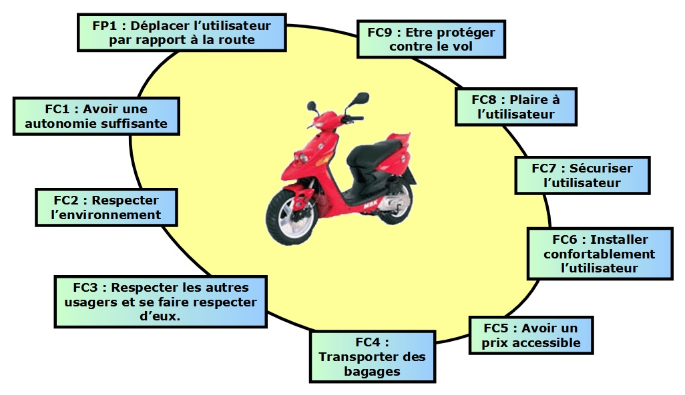
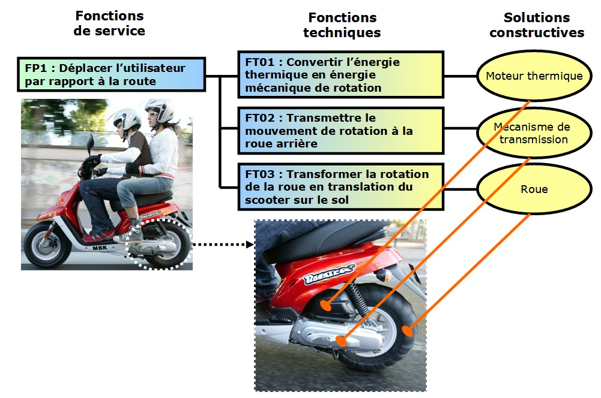
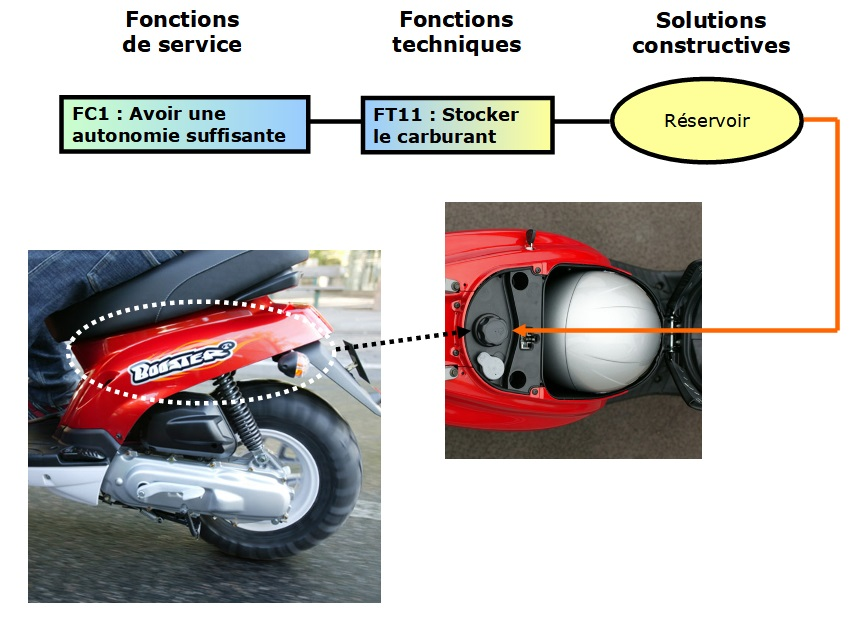
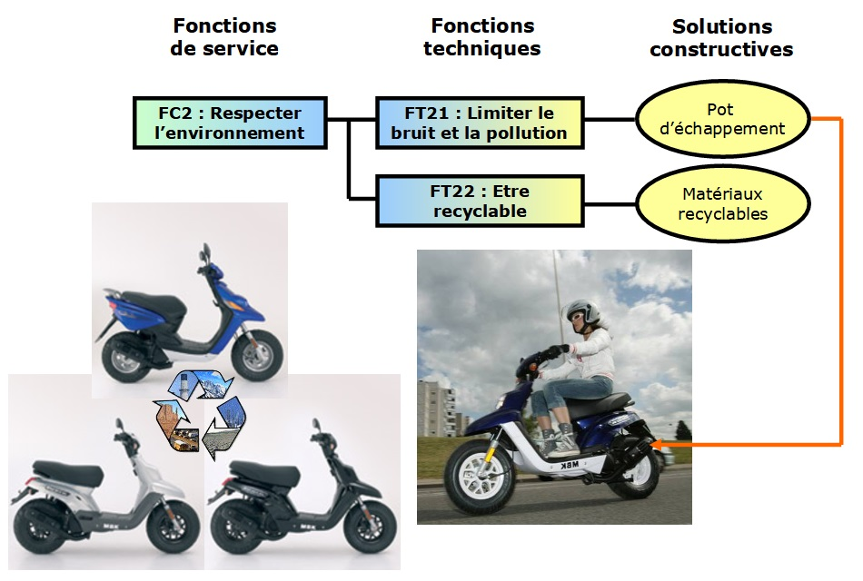
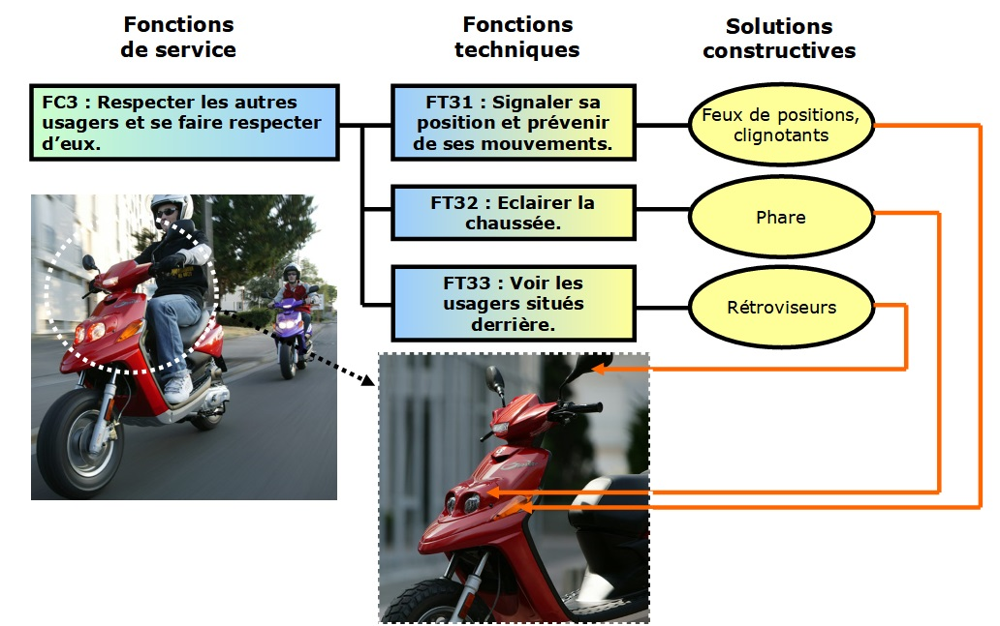
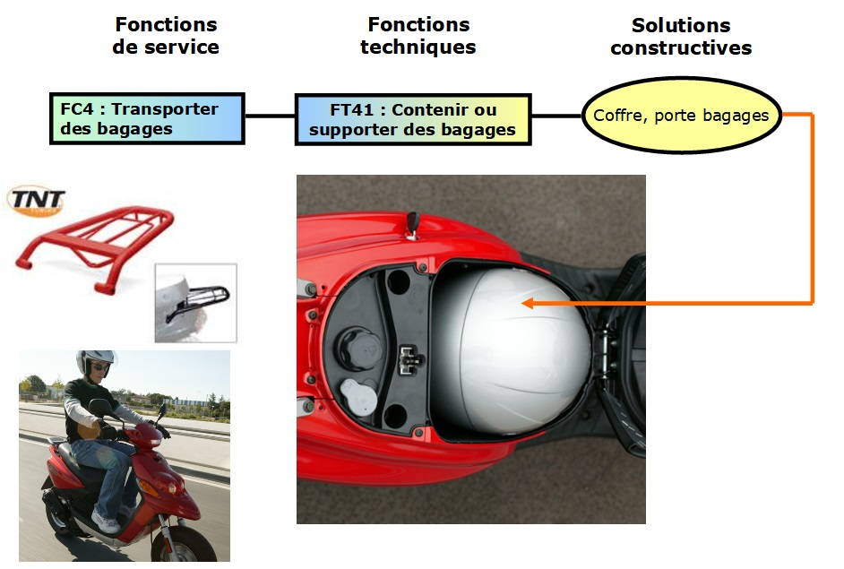
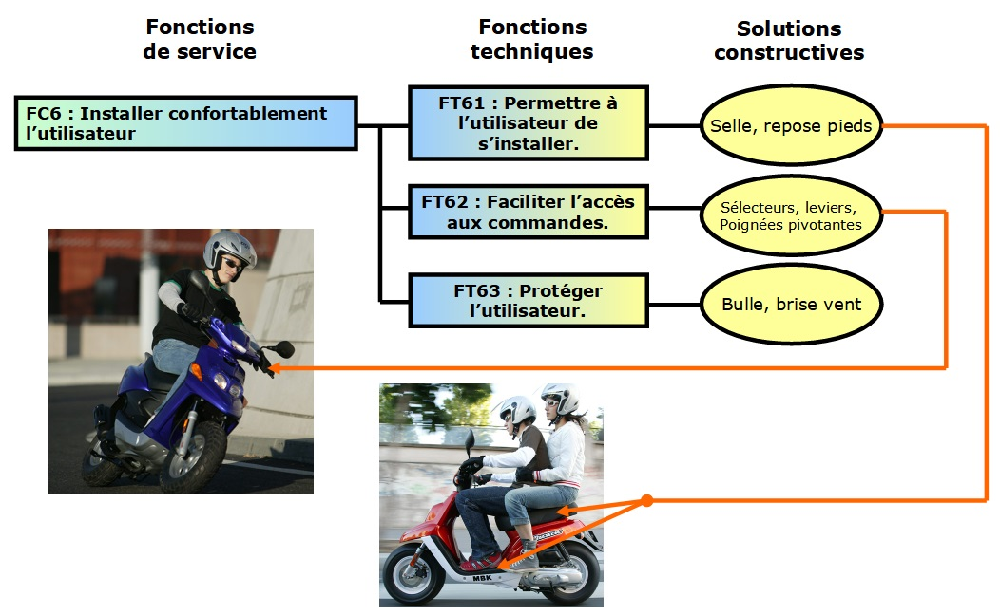
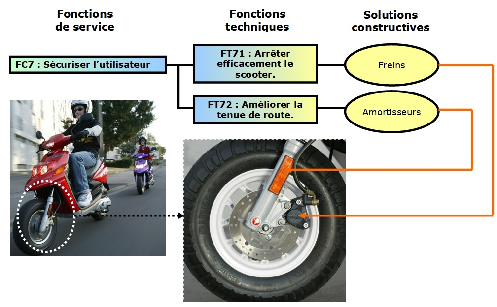
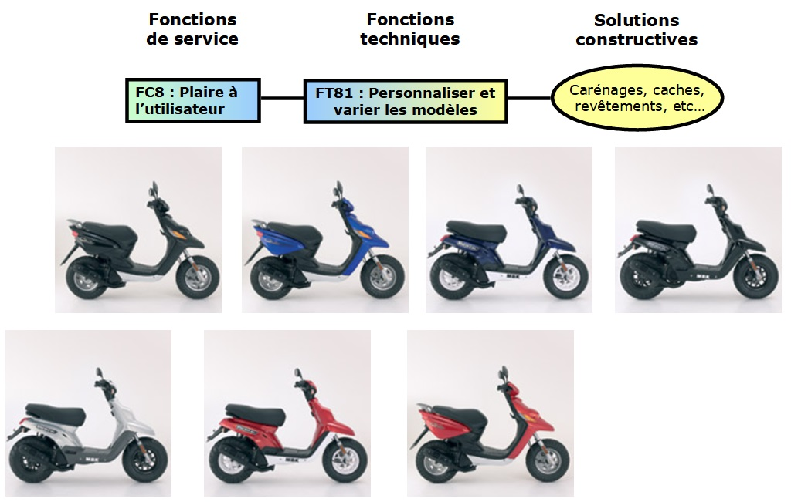
Votre navigateur est incompatible avec cet outil.